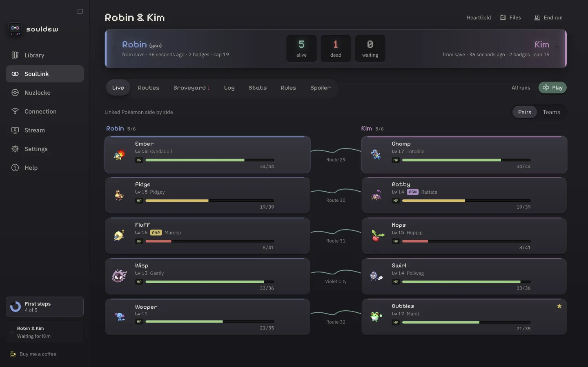
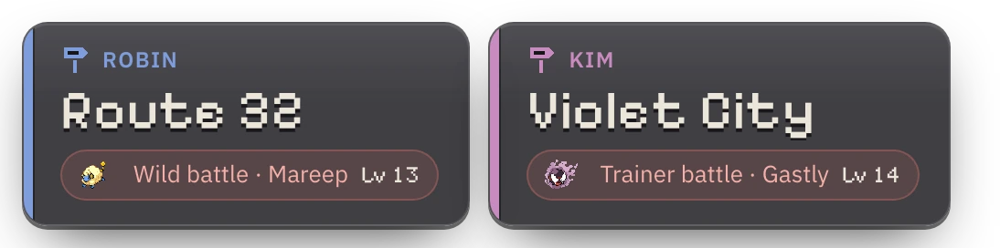
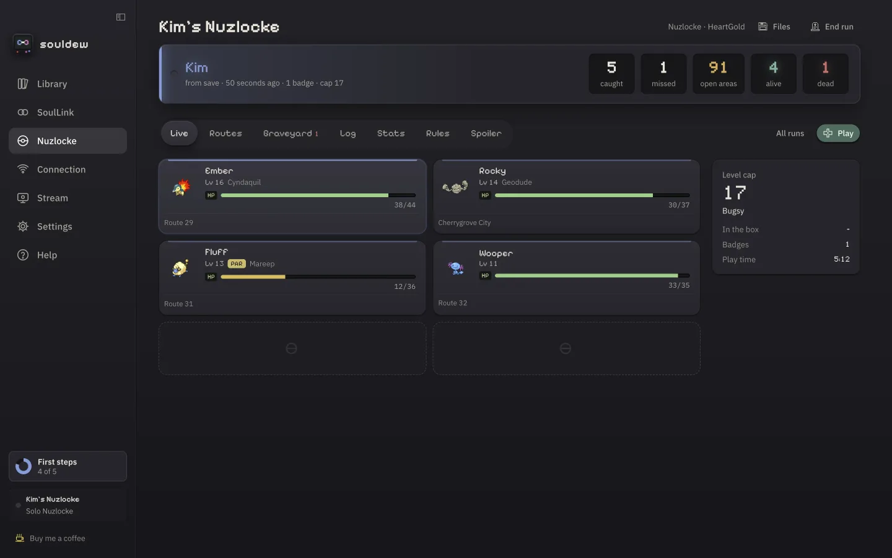

macOS
Apple silicon (M1 or newer)
Download for macOS- Open the .dmg and drag souldew into Applications.
- souldew isn’t notarized by Apple yet: open it once, then go to System Settings › Privacy & Security and click Open Anyway.
A free app for Pokémon SoulLinks with two to four players and for solo Nuzlockes. It runs the game, reads your team straight from memory and keeps everyone’s run in sync – no server, no account, no spreadsheet.


01 The rule
In a SoulLink, whatever you catch on a route is bound to what your partner catches there. souldew links the pair, watches both games – and when one of them goes down, it takes the other one with it.
02 Linking up
482917
03 The board
Linked Pokémon share one row – with live HP, level, status and the route they’re from, read straight from both games.
04 In the box
Emulator, tracker, rules, randomizer and sync live in the same place – and they talk to each other.
3DS, DS, GBA, Game Boy and Game Boy Color – 3DS games with both screens and the touch screen under your mouse. Fast-forward, eight save states, PlayStation, Xbox and Switch pads – and the game keeps running in a mini window while you check the board.
Species, nickname, level, HP, status and where it was caught – read from the running game’s memory. New catches file themselves under their route.
The opponent’s types and weaknesses, how your moves land – and whether your rules even allow the catch, including type clashes with your partners.
Up to four players, directly over WebRTC or through an encrypted relay. Your partner’s game shows up as a small live picture next to yours.
Universal Pokémon Randomizer ZX is built in, Java included. xdelta, BPS, UPS and IPS patches are applied for you, with 31 known hacks ready to go.
Fast-forward through the grind while the music keeps its normal speed. For DS games souldew plays the current song from your ROM’s own sound archive.
A sign next to the game shows each player’s area, read live – and what it means for them: first encounter open, caught, used up or dead.
English, German, French, Spanish and Italian. Colour-blind safe schemes, full keyboard control and reduced motion.
05 Streaming



06 Solo Nuzlocke
Classic, Hardcore or your own rules. Level caps, dupes and shiny clause, deaths and blackouts are detected for you – and the graveyard remembers who did it.
07 Supported games
Every main-series game from Generation 1 to 7 plays in souldew – the 3DS games included. Team and HP, the battle panel and “You are here” are read live in all of them.
English and German versions are supported for the team (3DS games: any language). For other languages and ROM hacks with a changed memory layout souldew searches for the team – and you can always enter catches by hand.
Your games stay on your computer. Only tracker data travels between players, encrypted with the key from your invite. No account, no telemetry, no ROMs – ever.
08 Download
Apple silicon (M1 or newer)
Download for macOSWindows 10 or 11, 64-bit
Download for Windows64-bit (x86_64) · Steam Deck
Download for LinuxDebian, Ubuntu, Mint: .deb package
chmod +x) and start it – it updates itself. Ubuntu 22.04 and newer need libfuse2 once.souldew updates itself: it checks for a new version at start and every four hours, verifies the signature and installs it on the next restart. Your runs and saves stay where they are.
09 Questions
souldew is free and stays free. If it made your runs more fun, you can buy me a coffee – or help build it.
Yes – free and open source under the GNU GPL v3.0 or later. No ads, no in-app purchases.
No. You play your own, legally obtained ROMs. souldew recognises them by header and checksum, also inside zips, and when it searches your computer it only reads file names and headers.
No. The apps find each other through public relays and then connect directly. If a router blocks that, data goes through an encrypted public relay instead – no port forwarding needed.
Everyone uses their own copy of the same game – a different language version works too. For randomized runs souldew builds the identical game for every player and compares the checksums.
The built-in one (recommended), or melonDS and mGBA as external emulators – mGBA with live data through a Lua script, melonDS after every in-game save.
Yes – X/Y, Omega Ruby/Alpha Sapphire, Sun/Moon and Ultra Sun/Ultra Moon run in souldew’s own player (Azahar’s core), with live team, battle panel and place sign. Use a decrypted .3ds/.cci/.cxi of your own cartridge. They need Vulkan: macOS brings it along, on Windows and Linux it comes with the graphics driver. 3DS games can’t be randomized.
Right after it happens, use Save diagnostics in the app’s help and attach the file to a bug report. It contains what the app read and decided – no ROM, save or invite data.